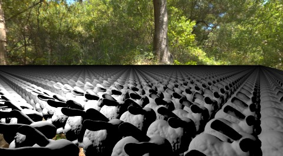
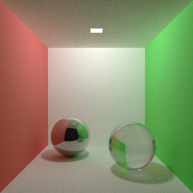
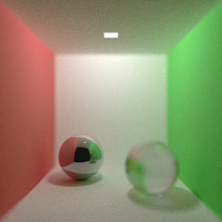
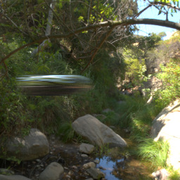
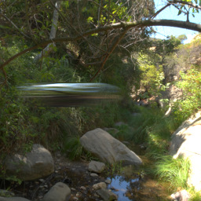
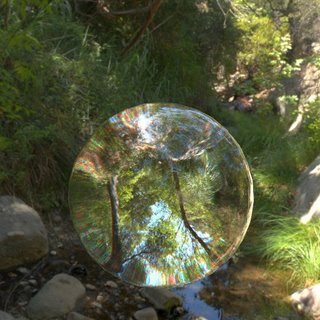
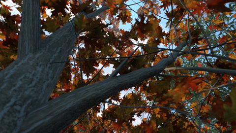
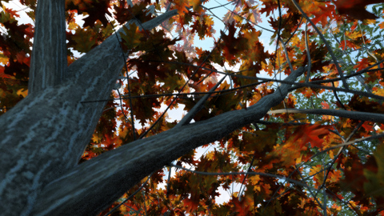

CSE168 Final Project, Winter 2011
Title: Bullet through Glass
Alejandro Guzman and Jorge Schwarzhaupt
For our final project we modeled a glass pane being destroyed by a large bullet in an outdoor scene.
The scene was inspired by high speed photography of shattering glass. See the following link for some neat high speed photography pictures
Model
The glass pane was created using a simulation in 3ds Max. We took 2 glass models for two different time steps in order to implement motion blur.
Each shattered glass model consisted of 86,914 triangles.
We found various trees, grass, and flower models from freely available sources online. Each tree body model consisted of 75,000 to 165,000 triangles.
The each tree leaves model consisted of 22,000 to 128,000 triangles.
Each flower model was about 35,000 triangles.
The sky is stored as a Lat-Long HDR environment map in the scene.
It was necessary to implement instancing since we had a large amount of repeated geometry in the scene.

A scene containing 1 million bunnies rendered using instancing. The scene contains 65.5 billion triangles and was rendered in 4.5 seconds on an i7 quad core processor.
We implement depth of field to make scene look more realistic. Using depth of field we are able to make focus on the objects of interest.
and keep the other objects out of focus depending on their distance to the focal point.


The depth of field effect in the cornell box. No depth of field in the left image. The right image has depth of field, focusing in on the mirror sphere.
We implemented motion blur to show how some objects in our scene are moving at high speeds.
Motion blur is implemented by using two models of the same geometry in different time frames and rendering both geometries.
We then interpolate between the resulting color values.


The motion blur effect simulating a bullet at increasing speeds.
In real life, the index of refraction of a light in a glass is dependent on the wavelength of light.
We implemented dispersion in our glass by splitting the incoming rays into R G and B rays, each with their own index of refraction.

Dispersion in a glass sphere.
Leaves, grass, and plants are not opaque objects. We wanted to simulate the effect of light being seen through the object.
We implemented translucency by sampling the light on both sides of geometry and multiplying by a thickness and translucency factor.

Tree leaves with no translucency

Tree leaves with translucency
The final image took a total of 20 minutes to render on an i7 quadcore desktop.
{kind=link}
{kind=link}
{kind=link}
{kind=link}
{kind=link}
{kind=link}
{kind=link}
{kind=link}
{kind=link}
{kind=link}